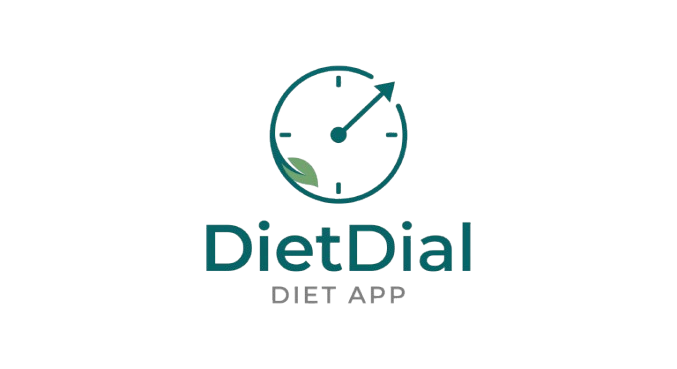

Privacy Policy
Last updated: 27 September 2026
This policy explains what the DietDial app (“DietDial”, “we”, “us”) collects, why, who can see it, and the choices you have. DietDial is developed and operated by an independent developer, who is the data controller. Contact: billtsitisback@gmail.com.
1. What stays on your phone
Your food log, recipes, custom foods, favourites, meal templates, water intake, fasting sessions, weight entries, goals and settings are stored only on your device. They are not uploaded to our servers, except for the daily totals described in section 3. You can use DietDial as a guest without an account.
2. Your account
If you create an account we store your email address and a user ID. If you sign in with Google, Google shares your name, email address and profile picture with us; we use them only to identify your account. Accounts are managed by our database provider, Supabase (section 8).
3. Social features and daily totals (optional)
The social features (friends, leaderboard, badges and coach monitoring) are optional. If you choose a username to use them, and give your explicit consent on that screen, we store:
- Profile: your username. Your real name from Google is never shown to other users.
- Daily totals for each day you use the app: calories, protein, carbohydrates, fat, cups of water, whether you logged any food that day, vitamin C, vitamin D, iron and calcium. Individual foods and meals are not uploaded.
- Relationships: friend requests and friendships, badges you earn, and coach relationships.
Daily totals describe your diet, so we treat them as health data and only store them with your explicit consent. You can withdraw it at any time by deleting your account (section 9).
4. Who can see your data
| Who | What they can see |
|---|---|
| Anyone using DietDial | Your username, when searching — unless you turn off Appear in friend search in Settings. |
| Your friends | Your username, cups of water, and — depending on your Privacy & Sharing settings — your streak, calories, macros (protein, carbs, fat) and micronutrients (off by default). |
| A coach you accept | All of your daily totals listed in section 3, which they can also export as a CSV file. This only happens if you accept a coach’s request (or invite a coach) and keep Allow coaches to monitor me switched on. You can remove a coach at any time. |
We never show anyone your email address, and we do not sell your personal data.
5. Food search, barcodes and camera
When you search for a food, your search terms are sent to our database to find matching foods. When you scan a barcode, only the barcode number is sent to Open Food Facts to look up the product. The camera is used only to read barcodes; no photos or video are stored or sent.
6. Anonymous usage statistics (opt-in)
Only if you opt in (during setup or in Settings), the app sends anonymous usage events: a random ID that is not linked to your account, the event type (for example “food logged”), the meal type, a calorie range (for example 300–500 kcal), the app version and your platform (Android). No names, email addresses or individual foods are included. We may share or sell aggregated statistics derived from this data (for example “X% of users log breakfast”) with research or nutrition-analytics partners; these cannot identify you. You can switch this off at any time in Settings.
7. Advertising
DietDial is free and shows ads through Google AdMob. Google may collect your device’s advertising ID, IP address and information about ad interactions, and may use cookies or similar technologies, to show and measure ads. In the European Economic Area, the UK and Switzerland, we ask for your consent through Google’s consent form before personalised ads are shown; you can change your choice later in Settings → Ad privacy choices. You can also reset or delete your advertising ID in your device settings. See how Google uses data from apps that use its services.
8. Service providers and where data is stored
| Provider | Purpose |
|---|---|
| Supabase | Account management and database (servers in the EU — Ireland) |
| Sign in with Google; advertising (AdMob) | |
| RevenueCat | Managing DietDial Pro subscriptions: receives an anonymous purchase ID (or your account ID if you are signed in) and Google Play purchase tokens — never your name or email |
| Open Food Facts | Barcode product lookups |
Nutrition information for foods comes from the USDA FoodData Central database; no data about you is sent to the USDA. Reminders and fasting alerts are scheduled on your phone and are not sent through any server.
DietDial Pro subscriptions are billed by Google Play. We never see your payment details; Google Play and RevenueCat tell the app only whether your subscription is active.
9. How long we keep data, and deleting it
We keep your account data until you delete your account. Settings → Delete Account permanently deletes your account, profile, daily totals, friendships, badges and coach relationships from our servers. If you can’t use the app, see Delete your account. Data stored only on your phone is removed when you uninstall the app or clear its data. Anonymous usage statistics (section 6) are not linked to your account, so they cannot be traced back to you or deleted with it.
10. Legal bases (EU / UK GDPR)
| Processing | Legal basis |
|---|---|
| Your account and providing the app | Performance of a contract (Art. 6(1)(b)) |
| Daily totals for social features (health data) | Your explicit consent (Art. 6(1)(a) and Art. 9(2)(a)) |
| Anonymous usage statistics | Your consent (Art. 6(1)(a)) |
| Personalised advertising | Your consent (Art. 6(1)(a)), collected through Google’s consent form |
| Non-personalised advertising and keeping the service secure | Our legitimate interests in funding and protecting a free app (Art. 6(1)(f)) |
11. Your rights
You can access, correct or delete your data; object to or restrict its processing; receive it in a portable format (you can export your food log from Progress → Export Food Log as CSV); and withdraw consent at any time without affecting earlier processing. To exercise these rights, email billtsitisback@gmail.com. You also have the right to lodge a complaint with your data protection authority — in Greece, the Hellenic Data Protection Authority (www.dpa.gr).
12. Security
Data is sent over encrypted connections (HTTPS). Access to data on our servers is restricted by per-user access rules, so other users can only see what section 4 describes.
13. Children
DietDial is not intended for children under 13, and we do not knowingly collect their data. If you are under the age of digital consent in your country (up to 16 in the EU), please use the social features only with a parent’s or guardian’s permission.
14. Changes
If we change this policy, we will update the date at the top of this page and, for significant changes, tell you in the app.